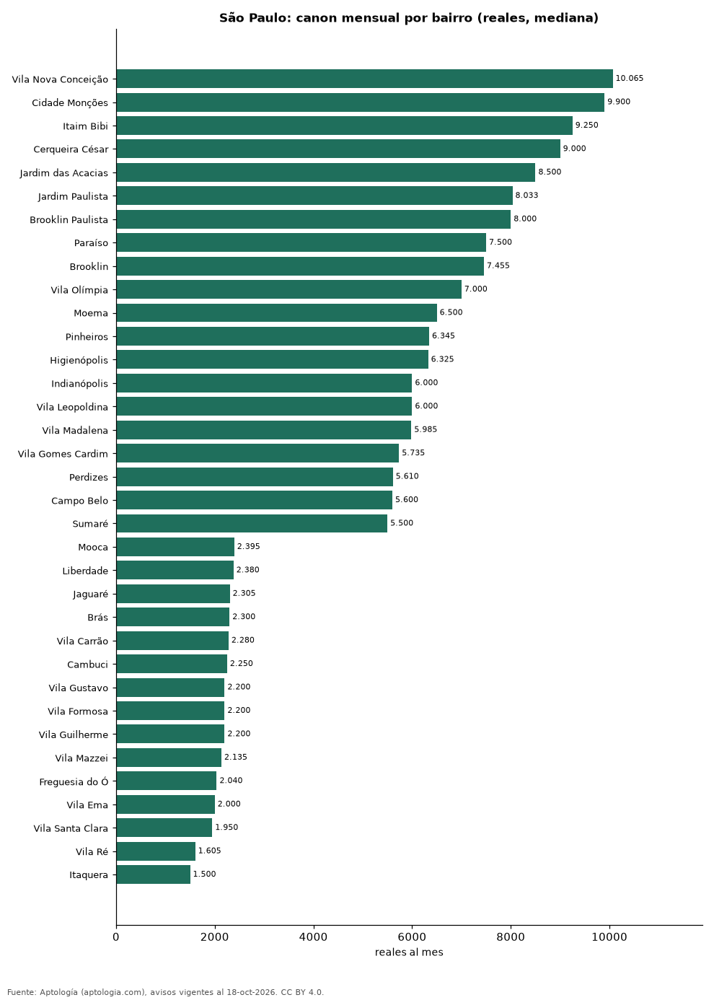

Precio de la vivienda por bairro en São Paulo: arriendo en 74 bairros (octubre 2026)
Estudio con datos abiertos (CC BY 4.0). Versión original: https://github.com/elbroker/aptologia-datos/tree/main/estudios/aluguel-sao-paulo-por-bairro-2026 · DOI: 10.5281/zenodo.23460786
Arrendar un apartamento en São Paulo cuesta más en Vila Nova Conceição, con un canon mediano de 10.065 reales (USD 1.978) al mes, y menos en Itaquera, con 1.500 reales (USD 295). La mediana de la ciudad es 3.621 reales (USD 712) al mes; por metro cuadrado, el bairro más caro es Vila Nova Conceição (131,6 reales (USD 25,9) por m² al mes).
Resumen: analizamos 7.628 avisos de apartamentos en 74 bairros de São Paulo con 30 avisos o más.
Actualizado: 18 de octubre de 2026 (datos del 18 de octubre de 2026) · Próxima actualización: mensual.

Resumen
| Indicador | Valor |
|---|---|
| Arriendo más alto | Vila Nova Conceição: 10.065 reales (USD 1.978) |
| Arriendo más bajo | Itaquera: 1.500 reales (USD 295) |
| São Paulo (mediana) | 3.621 reales (USD 712) |
| Bairros | 74 |
Bairros de São Paulo
| Bairro | Arriendo: reales al mes | Avisos |
|---|---|---|
| Vila Nova Conceição | 10.065 | 186 |
| Cidade Monções | 9.900 | 65 |
| Itaim Bibi | 9.250 | 304 |
| Cerqueira César | 9.000 | 136 |
| Jardim das Acacias | 8.500 | 40 |
| Jardim Paulista | 8.033 | 287 |
| Brooklin Paulista | 8.000 | 41 |
| Paraíso | 7.500 | 148 |
| Brooklin | 7.455 | 316 |
| Vila Olímpia | 7.000 | 416 |
| Moema | 6.500 | 304 |
| Pinheiros | 6.345 | 506 |
| Higienópolis | 6.325 | 64 |
| Indianópolis | 6.000 | 134 |
| Vila Leopoldina | 6.000 | 71 |
| Vila Madalena | 5.985 | 100 |
| Vila Gomes Cardim | 5.735 | 38 |
| Perdizes | 5.610 | 228 |
| Campo Belo | 5.600 | 175 |
| Sumaré | 5.500 | 45 |
| Vila Mariana | 5.035 | 258 |
| Vila Suzana | 5.000 | 57 |
| Chácara Santo Antônio | 4.960 | 69 |
| Vila Romana | 4.845 | 54 |
| Vila Regente Feijó | 4.800 | 34 |
| Sumarezinho | 4.434 | 52 |
| Jardim Anália Franco | 4.300 | 53 |
| Pompéia | 4.300 | 71 |
| Santo Amaro | 4.292 | 140 |
| Vila Mascote | 4.140 | 39 |
| Panamby | 4.020 | 95 |
| Consolação | 4.000 | 142 |
| Vila Clementino | 3.970 | 114 |
| Planalto Paulista | 3.945 | 36 |
| Vila Anastácio | 3.900 | 33 |
| Pompeia | 3.825 | 35 |
| Vila Andrade | 3.530 | 228 |
| Vila da Saúde | 3.515 | 36 |
| Bela Vista | 3.500 | 191 |
| Butantã | 3.500 | 121 |
| Tatuapé | 3.400 | 173 |
| Saúde | 3.335 | 44 |
| Aclimação | 3.300 | 52 |
| Ipiranga | 3.220 | 99 |
| Santa Cecília | 3.150 | 50 |
| Morumbi | 3.110 | 84 |
| Tucuruvi | 3.000 | 51 |
| Santana | 3.000 | 153 |
| Jardim Marajoara | 2.850 | 53 |
| Barra Funda | 2.700 | 115 |
| Casa Verde | 2.700 | 38 |
| Belém | 2.700 | 41 |
| Vila Buarque | 2.690 | 35 |
| Água Branca | 2.600 | 97 |
| Água Fria | 2.600 | 44 |
| Vila Prudente | 2.525 | 56 |
| Jardim Íris | 2.498 | 34 |
| Jabaquara | 2.460 | 38 |
| Belenzinho | 2.445 | 42 |
| Mooca | 2.395 | 192 |
| Liberdade | 2.380 | 44 |
| Jaguaré | 2.305 | 42 |
| Brás | 2.300 | 72 |
| Vila Carrão | 2.280 | 48 |
| Cambuci | 2.250 | 75 |
| Vila Gustavo | 2.200 | 33 |
| Vila Formosa | 2.200 | 69 |
| Vila Guilherme | 2.200 | 40 |
| Vila Mazzei | 2.135 | 38 |
| Freguesia do Ó | 2.040 | 53 |
| Vila Ema | 2.000 | 37 |
| Vila Santa Clara | 1.950 | 33 |
| Vila Ré | 1.605 | 30 |
| Itaquera | 1.500 | 61 |
Medianas de apartamentos; — indica menos de 30 avisos. El canon es el mensual sin gastos comunes, condominio ni administración.
Preguntas frecuentes
¿Cuál es el bairro más caro para arrendar en São Paulo? Vila Nova Conceição, con 10.065 reales (USD 1.978) al mes en la mediana.
¿Dónde es más barato arrendar en São Paulo? En Itaquera: 1.500 reales (USD 295) al mes.
Metodología
- Fuente: exportes nocturnos de la base de datos de Aptología (aptologia.com) del 18 de octubre de 2026: avisos vigentes de vivienda en portales inmobiliarios de 13 países, recogidos por Aptología y vistos en línea entre el 11 y el 18 de octubre de 2026. Corte: 18 de octubre de 2026.
- Depuración: se eliminan duplicados exactos (misma ciudad, zona, tipo, precio, moneda, área, habitaciones y baños) y los precios fuera del percentil 1–99 de cada país, operación, moneda y tipo; el precio por m² usa solo avisos con área declarada entre 12 y 2.000 m² y también se recorta al P1–P99.
- Qué se mide: precios pedidos (publicados), no precios de cierre. En arriendo, el canon mensual sin administración, gastos comunes ni condominio.
- Muestra mínima: cada cifra publicada se apoya en al menos 30 avisos; las celdas con menos se omiten.
- Monedas: nunca se mezclan avisos de monedas distintas sin convertirlos. Conversión a dólares con la tasa de mercado de ExchangeRate-API (open.er-api.com, actualización del 18 Oct 2026): 1 USD = 3.182,80 COP, 1 USD = 18,47 M.N, 1 USD = 5,09 BRL, 1 USD = 3,44 PEN, 1 USD = 982,44 CLP, 1 USD = 1.514,57 ARS, 1 USD = 40,20 UYU, 1 USD = 5.705,37 PYG, 1 USD = 61,27 DOP, 1 USD = 0,89 EUR, 1 USD = 11,72 BOB; la UF chilena a 41.178,64 CLP (mindicador,cl. 18-oct-2026). Los avisos publicados en dólares se usan tal cual.
- Monedas: Arriendo en reales; los avisos en otra moneda se excluyen.
- Limitaciones: la cobertura depende de los portales que recorre Aptología en cada país y es mayor en las ciudades grandes y en los segmentos medio-alto y alto; el área es la que declara el aviso, sin verificar; los nombres de zona vienen de los portales.
- Privacidad: solo se publican agregados; no se publica ningún dato personal, enlace a avisos ni nombre de anunciante.
- Datos abiertos: datos.csv, licencia CC BY 4.0.
Cómo citar
Pinzón Pineda, D. M. (2026). Precio de la vivienda por bairro en São Paulo: arriendo en 74 bairros (octubre 2026). Aptología (aptologia.com). https://github.com/elbroker/aptologia-datos/tree/main/estudios/aluguel-sao-paulo-por-bairro-2026. Datos: datos.csv, licencia CC BY 4.0.